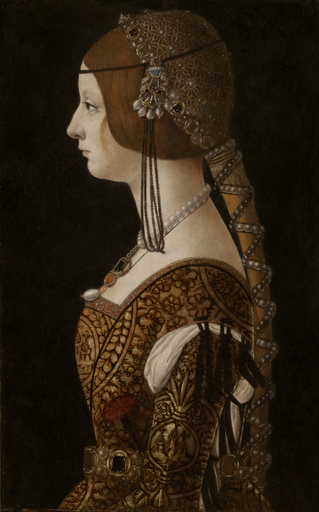

Entender que as mulheres são, sim, agentes históricos e que possuem importância na construção da História do Ocidente é um trabalho árduo, principalmente à medida que se acumulam justificativas como a alegação de "não haver fontes sobre as mulheres". Se não há nenhuma fonte que coloque o feminino em destaque no medievo, ou se não há historiadores que tenham escrito sobre elas ao longo da história da historiografia, significa que as mulheres não foram importantes para a história ocidental, certo? Bem, isso não poderia estar mais longe da verdade. Atualmente, encontramos diversas fontes que abordam o papel das mulheres em vários períodos da humanidade. Foi, no entanto, uma escolha da historiografia clássica não colocar essas mulheres no mesmo patamar dos grandes heróis nacionais.
É necessário, contudo, entender que até mesmo as poucas fontes disponíveis são parciais. O historiador Georges Duby afirma que "todos os relatos que chegam até mim e me informam vêm dos homens, convencidos da superioridade de seu sexo. Só as vozes deles chegaram a mim" (DUBY, 1989, p.6). Assim, as fontes medievais sobre as mulheres foram escritas por homens, o que significa que elas revelam muito mais sobre como as mulheres eram vistas na Idade Média do que sobre como elas realmente eram ou se viam.

Imagem de 1493, de Branca Maria Sforza, imperatriz do Sacro Império Romano-Germânico,
representando uma dama medieval com vestuário luxuoso e cabelo trançado -Giovanni Ambrogio de Predis
Dessa forma, a historiografia sobre as mulheres na Idade Média sofre duplamente com o patriarcado de seu próprio período e de períodos posteriores. A predominância de uma estrutura masculina tanto nas produções literárias medievais quanto nas análises acadêmicas, que se estendem do final do século XIX até os dias atuais, resultou no apagamento proposital das mulheres. Em um primeiro momento, suas ações foram consideradas insignificantes para serem descritas e, posteriormente, essas mesmas ações foram caracterizadas como triviais para a História do Ocidente.
Então, como seriam essas mulheres na Idade Média? Por conta das barreiras sociais da época, as mulheres são mais frequentemente encontradas não em batalhas ou em uma historiografia bélica, embora haja exceções, mas em histórias que pertencem ao âmbito social e religioso. É sobre a função das mulheres medievais nesses círculos, os regimes de gênero impostos a elas e como essas mulheres subverteram essas normas que vamos debater a partir de agora.